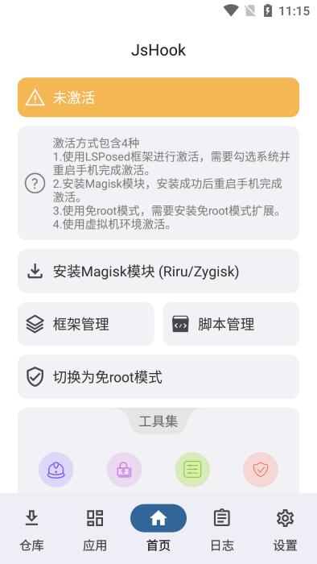

我用了半年 JsHook，从"Frida 替代品"到"AI 时代的 Hook 工作流"
从把它当 Frida 的移动端包装壳开始，到发现它自带 MCP 服务能让 VS Code Copilot 直接操作手机——这半年的体验变化，比我预想的要大得多。
装它的理由，以及那个被证伪的初衷
半年前从官方下载装 JsHook，说穿了就是一个需求：手机上的 Frida Server 太折腾。Root 后的 Android 设备要跑 Frida，先得上 magisk 模块，然后每次重启要手动 push server 二进制、开端口、确认 frida-tools 连得上——这一套下来，半小时就没了。我以为 JsHook 就是把这套流程打包成一个 APK，省掉那些手动步骤——后来才发现它的官网上远不止这些。
现在回头看，这个理解错得很彻底。
越用越顺手的：从"手动写脚本"到"AI 帮你写"
让我真正停下来重新审视它的，是某个深夜调一个电商 App 的登录 Hook。目标是找到 token 生成的位置，手动枚举类、搜字符串、定位方法，这套流程我已经熟到机械了——但那天我开了 MCP 服务，让 VS Code Copilot 直接连手机。
Copilot 问我想 Hook 什么，我说"找 com.shop.app 里处理登录请求的方法，生成 Hook 代码"。然后它自己调用了 JsHook 的 MCP 工具，枚举加载的类，搜关键词，定位到 LoginManager.a(String, int)，然后生成了完整的 Frida 脚本，写进了工作区。我推到手机，重启目标应用，logcat 里直接打印出了登录请求的所有参数。

那瞬间的感觉，怎么说呢——像是用惯了命令行的人第一次点到了图形界面。不是说手动写脚本不行，而是当你每天要调三五个 App，每个都要先定位类再写 Hook，那个时间成本是实打实的。
MCP 服务默认端口 28050，手机和电脑在同一 Wi-Fi 就能连。详细的配置步骤和可用工具清单，去jshook文档翻一下就清楚了。我现在的工作流基本是：开 JsHook → 开 MCP → VS Code 里让 Copilot 搜类、写脚本 → 推手机测试。手动写 Frida 代码的场景反而少了——主要是一些复杂的内核模式 Hook，AI 生成的代码需要改，但那也只是后半段的事了。
越用越烦的：两个没解决的老问题
说好的，也得说不好的。
第一个是脚本仓库的网络问题。JsHook 内置了脚本仓库订阅功能，本质上是一个 JSON 文件列表，支持官方仓库也支持自建仓库。但大陆直连 GitHub 经常超时，仓库列表加载不出来是家常便饭。开 VPN 能解决，但每次开 VPN 就为了刷一下脚本列表，总觉得哪里不对。而且就算订阅成功了，脚本下载也会因为 url 字段指向的服务器不稳定而失败——这事儿没什么技术含量，就是网络环境的问题，但它占了我不少排查时间。

第二个是增强渲染的兼容性。JsHook 的 modmenu 悬浮窗底层走 ImGui，增强渲染开启后直接走 GPU 绘制，体验流畅且不能被系统录屏/截图捕获——这对我来说是刚需，因为很多目标 App 会检测截图行为。但虚拟机和部分机型上增强渲染不可用，JsHook 会自动回退到 Android 系统渲染，性能差一截而且能被录屏捕获。有一次在模拟器上调一个游戏，开了增强渲染检测，结果直接闪退，花了两个小时才定位到是渲染回退导致的检测绕过失败。
每天离不开的：modmenu 悬浮窗
modmenu 是 JsApi 里最常用的接口，用 ImGui 绘制悬浮窗，支持 switch、select、slider、button、input 等组件。我现在调任何一个 App，第一件事就是建一个 modmenu——不是为了做游戏辅助，而是为了实时观察 Hook 效果。
比如 Hook 了金币变化，开一个 switch 控制开关，一个 slider 调倍率，onchange 回调里直接打 log。以前是改脚本 → 重启 App → 看 logcat，现在是直接拖滑块，实时看效果，调参效率至少翻了三倍。而且多标签页支持，把不同功能分 Tab 管理，一个复杂的 Hook 项目也能保持悬浮窗的整洁。

说个反直觉的：我以为 modmenu 是给"做成品辅助"的人用的，自己写脚本调试阶段根本不需要。但实际用下来，它反而在调试阶段价值最大——当你不确定某个 Hook 逻辑对不对的时候，一个可交互的悬浮窗比反复重启 App 强太多了。
当初的判断，哪些被修正了
装它的时候我以为它就是"移动端 Frida 包装器"，三个月后我以为它的核心价值是"脚本仓库 + MCP 服务"，半年后的现在我觉得，它真正厉害的地方是把 Hook 这件事从"写代码"变成了"对话"。
Frida 的门槛在于"你得先会写代码"，而 JsHook + MCP 把这个门槛降到了"你得会用自然语言描述你想干什么"。这不是说代码不重要，而是说代码不再是第一道坎——Copilot 帮你把骨架搭好，你只需要把精力放在逻辑和调试验证上。
高估的地方？当初以为有了 MCP，Copilot 就能直接帮我把所有 Hook 都写好。实际用下来，AI 生成的代码"骨架对，但细节常常错"——类名对了但方法重载没指定对，arguments 转发漏掉了，Frida 不支持 %s 格式化但它还是写了。让 AI 当起草者，人做最终审核，这个定位才是对的。
低估的地方？当初没把 modmenu 当回事。现在它是我每天开 JsHook 之后必做的第一件事。
去留结论
会不会卸载？不会。它在我的工具链里已经从"可选项"变成了"基础设施"——就像 Frida 本身一样，你不会因为它偶尔让你烦就把它卸掉，而是会想办法绕过那些烦人的地方。
什么信号出现就该换了？如果有一天 MCP 服务不再更新，或者 Frida 本身把类似能力内置了。但目前看这两件事都没迹象——JsHook 最近几个版本一直在迭代 MCP 相关功能，Copilot 联动的体验也越来越顺滑。
最后说一句：源码和说明文档在GitHub、Gitee、GitCode 三个仓库都有同步，国内访问建议直接走 Gitee 或 GitCode。